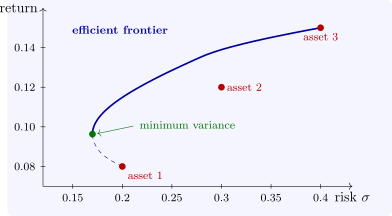

10.3 Quadratic programming and portfolios
A quadratic programme has a quadratic objective \(\frac 12x^{\mathsf T}Qx + c^{\mathsf T}x\) and linear constraints; it is convex when \(Q\) is positive semidefinite. With equality constraints \(Ax = b\) only, the KKT conditions are a linear system, \[ \begin {pmatrix} Q & A^{\mathsf T} \\ A & 0 \end {pmatrix}\begin {pmatrix} x \\ \mu \end {pmatrix} = \begin {pmatrix} -c \\ b \end {pmatrix} , \] and with inequalities, active-set methods guess which constraints are tight, solve this system, and adjust the guess, much as the simplex method adjusts its basis.
The best-known application is Markowitz’s portfolio selection (1952). With expected returns \(\mu \) and covariance matrix \(\Sigma \) of \(n\) assets, a portfolio with weights \(w\) has expected return \(\mu ^{\mathsf T}w\) and variance \(w^{\mathsf T}\Sigma w\). An investor minimises risk for a required return: \[ \text {minimise } w^{\mathsf T}\Sigma w \quad \text {subject to}\quad \mu ^{\mathsf T}w \geq r, \quad \textstyle \sum w_j = 1, \quad w \geq 0 . \] Solving for every \(r\) traces the efficient frontier, the best attainable trade-off between return and risk (Figure 10). Diversification shows in the numbers: the minimum-variance portfolio of three assets has standard deviation \(0.170\), below the \(0.2\) of the least risky asset alone, because the assets are imperfectly correlated.

Questions on this section
Stuck on something here? Ask below and it stays attached to this topic.